How to use LabTrack
LabTrack is a lab notebook for the bench. Log results as you go, follow samples through each step, then export a spreadsheet, a report or a picture. Everything stays on your device. In the screenshots, the 1 numbers show where to tap, in order.
Contents
- 01The buttons at the top
- 02Log your first result
- 03Prepare records, fill in later
- 04Change or add to a record
- 05Replicates (R1, R2, R3)
- 06Re-reads and extra measurements
- 07Follow samples through steps
- 08Sections: rename, copy, reorder
- 09The sample journey
- 10Export and back up
- 11Pictures for slides
- 12Continue a run later
- 13Add TapeStation results
- 14Your data and shared computers
- 15Questions
The buttons at the top
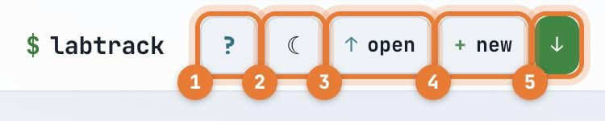
- 1? opens this guide.
- 2☾ / ☀ switches between light and dark mode.
- 3↑ open: continue a run from a file you exported, or add instrument results (TapeStation).
- 4+ new starts a fresh run. Export the current one first if you still need it.
- 5↓ export: spreadsheet, text report, picture or backup.
Log your first result
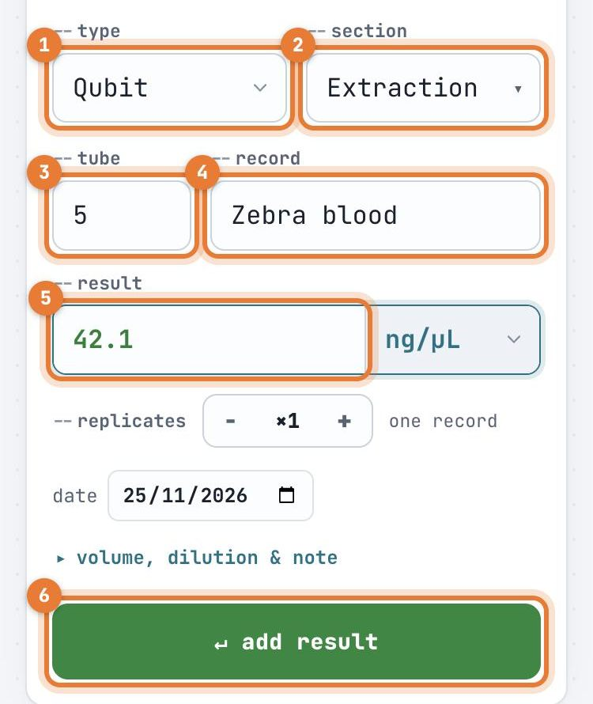
- 1Type: pick what you're measuring, e.g. Qubit. The unit (ng/µL) is filled in for you.
- 2Section: the step you're at. Type any name, or pick a preset such as Extraction, PCR or Bead clean-up.
- 3Tube (optional): the number written on the tube. It counts up by itself for the next record.
- 4Record: the sample name. Leave it blank to use the grey suggestion (e.g. Blood 2 after Blood 1).
- 5Result: the number. Choose no unit to type text instead, e.g. band at 300 bp.
- 6Tap ↵ add result. The cursor jumps back to Result, ready for the next tube.
Prepare records, fill in later
Setting up a batch before the readings? Leave Result empty and keep pressing ↵ add record · fill result later. Each record waits in the log with a dashed box:
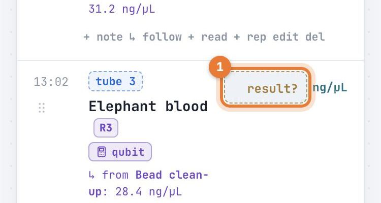
- 1Tap the result? box, type the reading and press Enter. You jump straight to the next empty box.
Change or add to a record
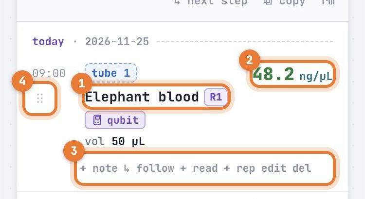
- 1Tap the name (or the tube tag) to rename it. You can rename its linked steps too.
- 2Tap the result (or unit, or type tag) to change it.
- 3The action row:
+ note adds a note to this record.
↳ follow carries this sample on to its next step (see 07).
+ read adds another reading of the same tube (see 06).
+ rep adds one more replicate of this sample (see 05).
edit opens all fields, and del deletes (it asks first). - 4⠿ Press and drag to move the record up or down, or into another section.
Replicates (R1, R2, R3)
Doing the same sample in triplicate? Type the name once:
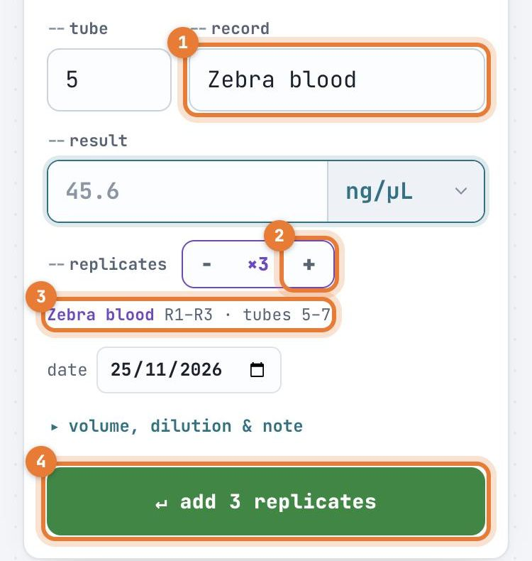
- 1Type the sample name, e.g. Zebra blood, and its first tube number.
- 2Tap + next to replicates until it says ×3.
- 3Check the hint: Zebra blood R1–R3 · tubes 5–7.
- 4Tap ↵ add 3 replicates. You get R1, R2, R3, each with its own tube, ready for results.
Re-reads and extra measurements
Read the same tube again, or measure it a second way at the same step (e.g. Qubit and TapeStation after a clean-up). Tap + read on the record:
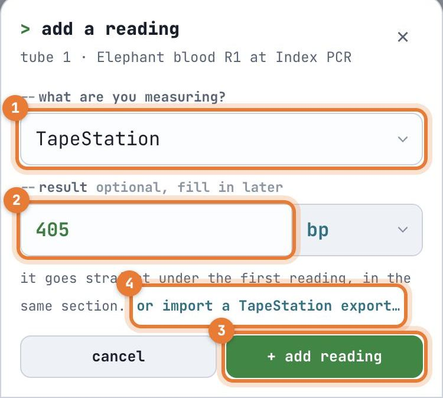
- 1What are you measuring? Re-read · same as before is the default. Or pick another type, or other… to type your own name and unit.
- 2Type the result, or leave it empty to fill in later.
- 3Tap + add reading. It appears straight under the first one, marked ↳ reading 2.
- 4Have a TapeStation export? Use this link to import it for this sample (see 13).
Follow samples through steps
Took your samples on to the next step (e.g. clean-up → library prep)? Tap ↳ next step on the section header to carry every sample on at once, or ↳ follow on one record for just that sample.
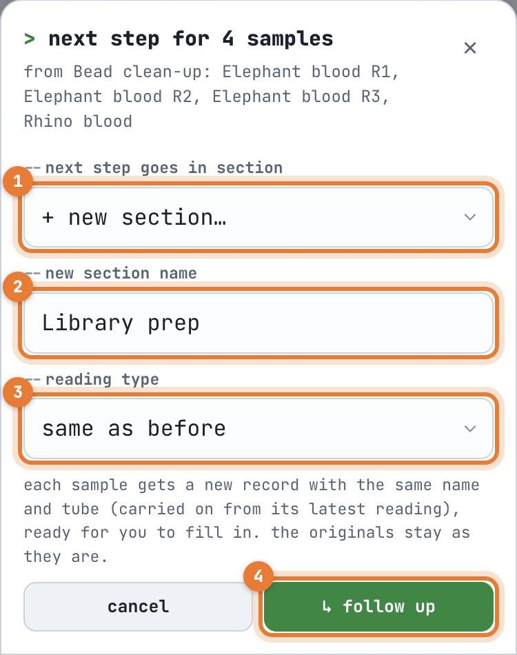
- 1Choose where the next step goes: an existing section or + new section….
- 2For a new section, type its name (presets are suggested).
- 3Keep same as before, or pick the reading you'll take at this step.
- 4Tap ↳ follow up. Each sample gets a new record with the same name and tube, linked to where it came from (↳ from Bead clean-up: 29.8 ng/µL), ready for its result.
Sections: rename, copy, reorder
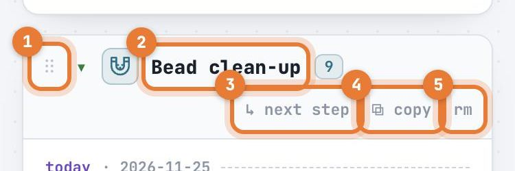
- 1⠿ Drag to move the whole section.
- 2Tap the name to rename it. Tap the ▾ arrow beside it to fold the section away.
- 3↳ next step carries every sample in this section on to the next step.
- 4⧉ copy duplicates the section with its records, either with blank results (for a repeat) or as an exact copy.
- 5rm removes the section. Its records move to General; nothing is deleted.
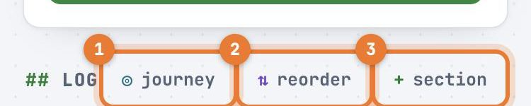
- 1◎ journey switches to the sample journey (see 09).
- 2⇅ reorder shows ↑ ↓ buttons and lets you sort a section by name or by tube number.
- 3+ section adds an empty section.
The sample journey
Tap ◎ journey to see each sample followed through every step: one card per sample (replicates grouped together), with a trend of its main reading.
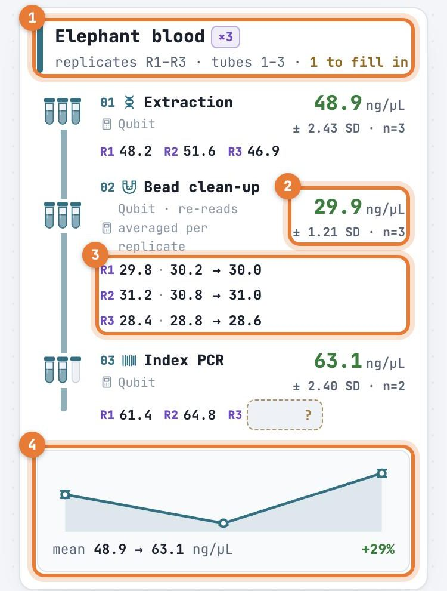
- 1The sample: ×3 means three replicates, with their tubes and how many results are still to fill in.
- 2At each step: the mean ± SD across replicates and n.
- 3Each replicate's own readings and their average (R1 29.8 · 30.2 → 30.0). Empty boxes can be filled in right here.
- 4The trend of the main reading from step to step, with the % change.
Export and back up
Tap ↓ export at the top right.
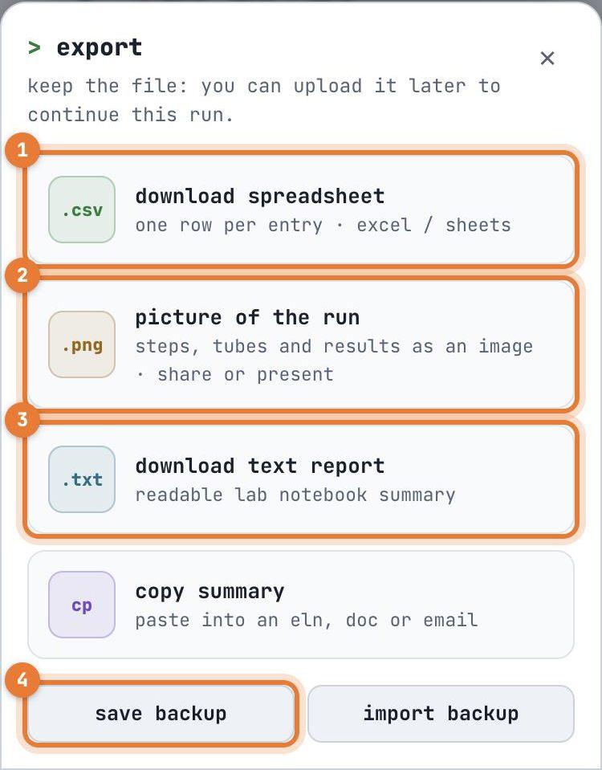
- 1Spreadsheet (.csv) for Excel or Google Sheets, one row per entry.
- 2Picture (.png) to share or present (see 11).
- 3Text report (.txt), a readable notebook summary. Copy summary puts the same text on the clipboard.
- 4Save backup (.json) keeps everything, including TapeStation traces. Best for moving a run to another device.
Pictures for slides
↓ export → picture of the run:
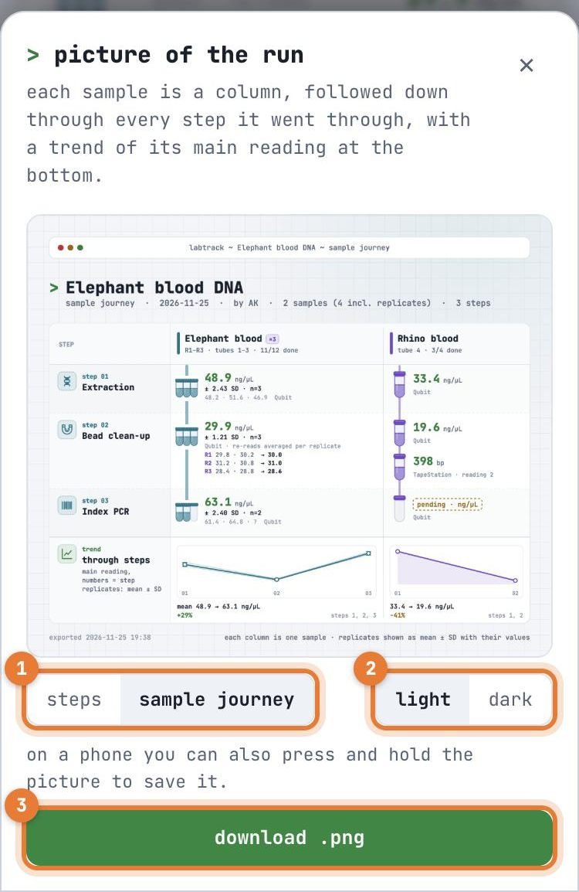
- 1steps shows one card per section. sample journey shows one column per sample, followed through every step, with trends.
- 2light or dark.
- 3download .png. On a phone you can also press and hold the preview to save it to Photos, or use share… if it appears.
Continue a run later
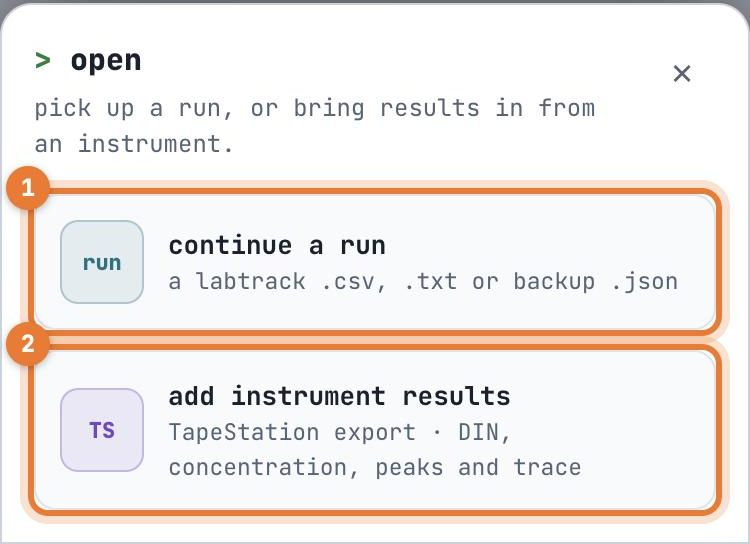
- 1↑ open → continue a run, then pick a LabTrack
.csv,.txtor backup.json. Everything is loaded back in, ready to keep adding to. - 2add instrument results brings in a TapeStation export (next section).
Add TapeStation results
Get DIN (or RINe), concentration, peak size, average fragment size and the electropherogram onto your samples, straight from the files the TapeStation exports.
1. Export from the TapeStation computer
In the TapeStation Analysis software, export the run's results as CSV and copy them to a USB stick or a shared folder. The files are named after the run, for example:
| File name ends in | What LabTrack takes from it |
|---|---|
_sampleTable.csv | needed wells, sample names, DIN / RINe, concentration, instrument warnings |
_compactPeakTable.csv | needed peak sizes, % of area, the From–To region, and the ladder sizes |
_Electropherogram.csv | recommended the trace LabTrack draws, and the average fragment size |
_runProperties.csv | optional assay name and run date/time |
_screenTapeDeviceProperties.csv | optional ScreenTape expiry (warns if it was out of date) |
_A1_Ladder.png etc. | not needed LabTrack draws its own trace |
Example run folder: 2026-11-25 - 12-41-41-gDNA/ containing 2026-11-25 - 12-41-41-gDNA_sampleTable.csv, …_compactPeakTable.csv, …_Electropherogram.csv and so on. The middle part (gDNA) changes with the assay, e.g. D1000 or RNA.
2. Choose the files
- 1Open the run you want to add to (or start it), then tap ↑ open → add instrument results.
- 2Tap choose TapeStation export files and select all the CSV files from the run folder at once. On a phone, tap Select in the file picker to pick several.
3. Match each well to your sample
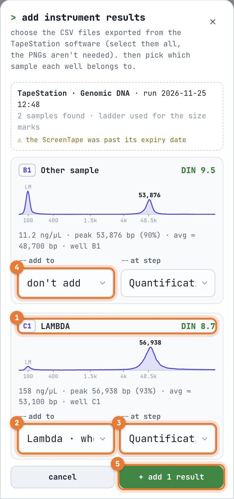
- 1Each well shows its name, DIN, trace, concentration, peak and average size.
- 2add to: which of your samples it belongs to. Wells whose name matches a sample are matched for you (LAMBDA → Lambda · whole sample). Choose whole sample for a replicated sample's stock, a single replicate, or + new sample.
- 3at step: the section to put it in (or + new step: TapeStation).
- 4Wells that aren't yours (other people's samples, the ladder) stay on don't add and never enter your run.
- 5Tap + add 1 result.
4. What you get
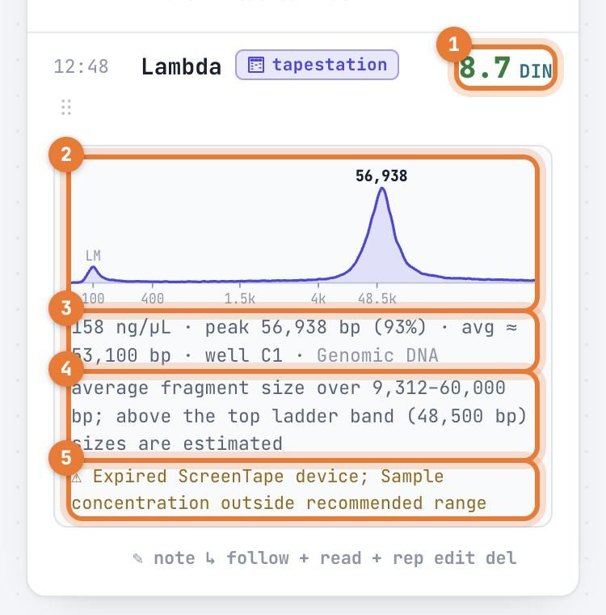
- 1The headline: DIN (or RINe), with the run's date and time.
- 2The electropherogram, redrawn from the export: lower marker (LM), the labelled main peak and the ladder sizes underneath.
- 3Concentration, main peak (size and % of area), average fragment size and well. These are the instrument's own values, except the average (see 4).
- 4Average fragment size: calculated by LabTrack across the main peak's region, weighting each size by its signal. Above the largest ladder band (48,500 bp on genomic DNA tapes) sizes can only be estimated, so it's shown with ≈. For libraries on D1000/D5000 tapes, everything sits inside the ladder and the value is precise.
- 5Any warning from the instrument, e.g. an expired ScreenTape or a concentration outside the recommended range.
Your data and shared computers
Your runs are stored only in this browser on this device. Nothing is uploaded, and nobody else using the same link can see them.
If LabTrack hasn't been used for 30 minutes and a run is open, it asks whether to continue it or start a new one, so results from different people on a shared computer don't get mixed.
Questions
Can I use it without internet?
Yes. After your first visit it works offline. On a phone, add it to your home screen (iPhone: Share → Add to Home Screen; Android: Install app) to open it like an app.
How do I move a run to another phone or computer?
↓ export → save backup, send the .json file to the other device, then ↑ open → continue a run there.
I logged something in the wrong section.
Drag it by its ⠿ handle into the right section, or tap edit and change the section.
How are replicate averages calculated?
Each replicate's re-reads are averaged first. Then the mean and sample standard deviation (SD) are taken across replicates, so n is the number of replicates. A replicate still waiting for a result is left out until it's filled in.
My TapeStation well wasn't matched to my sample.
Matching uses the sample description typed on the TapeStation. If it differs from your record name, just pick your sample in the add to menu.
Does LabTrack read the TapeStation's own run files?
No. Those are in Agilent's own format. Use the CSV export from the TapeStation Analysis software (see 13).
Something looks wrong or I have an idea.
Open an issue on GitHub.
← back to labtrack · LabTrack v3.18.1 · free and open source (MIT)